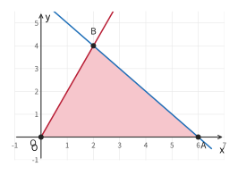
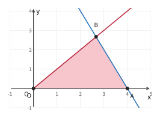
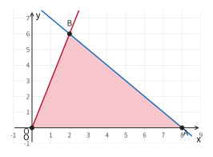

別冊練習問題 8 の解答 連立不等式の領域の面積
(1) 連立不等式 \(y\geqq0,\ y\leqq 2x,\ y\leqq -x+6\) の表す領域の面積を求めよ。
境界線と頂点
\(y=2x\) と \(y=-x+6\) の交点 \(B(2,\ 4)\)、第2の直線と \(x\) 軸の交点 \(A(6,\ 0)\)。

底辺と高さ
底辺 \(OA=6\)、高さ \(4\)。
面積
\[\dfrac12\cdot6\cdot4=12\]【答案】
\[12\]答
(2) 連立不等式 \(y\geqq0,\ y\leqq x,\ y\leqq -2x+8\) の表す領域の面積を求めよ。
境界線と頂点
\(y=x\) と \(y=-2x+8\) の交点 \(B(\dfrac{8}{3},\ \dfrac{8}{3})\)、第2の直線と \(x\) 軸の交点 \(A(4,\ 0)\)。

底辺と高さ
底辺 \(OA=4\)、高さ \(\dfrac{8}{3}\)。
面積
\[\dfrac12\cdot4\cdot\dfrac{8}{3}=\dfrac{16}{3}\]【答案】
\[\dfrac{16}{3}\]答
(3) 連立不等式 \(y\geqq0,\ y\leqq 3x,\ y\leqq -x+8\) の表す領域の面積を求めよ。
境界線と頂点
\(y=3x\) と \(y=-x+8\) の交点 \(B(2,\ 6)\)、第2の直線と \(x\) 軸の交点 \(A(8,\ 0)\)。

底辺と高さ
底辺 \(OA=8\)、高さ \(6\)。
面積
\[\dfrac12\cdot8\cdot6=24\]【答案】
\[24\]答